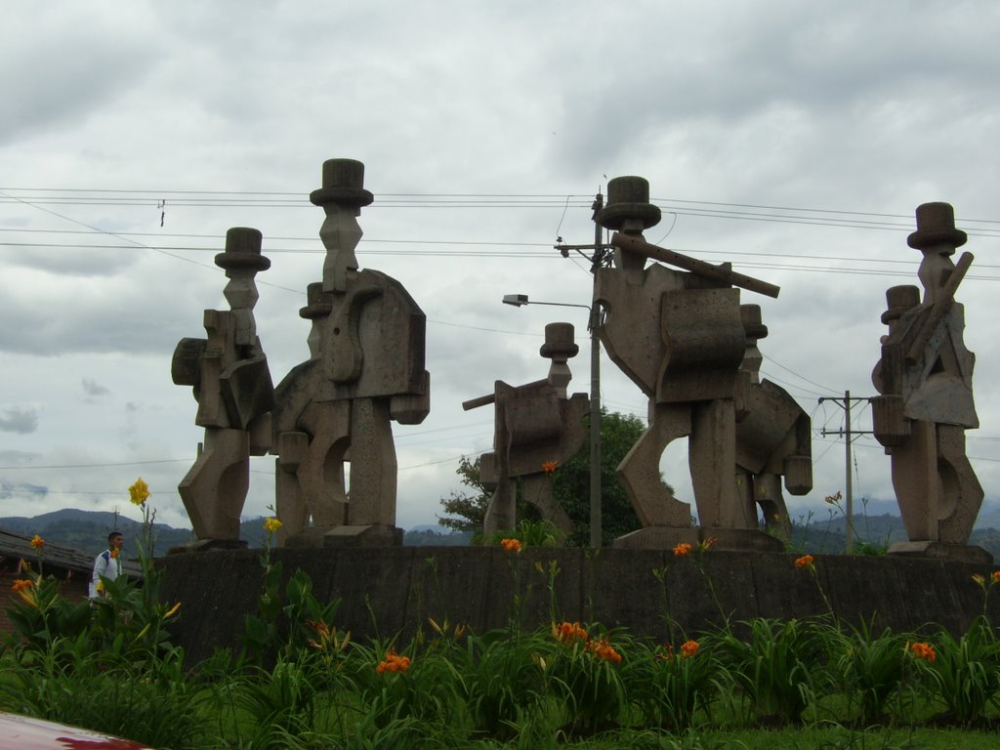
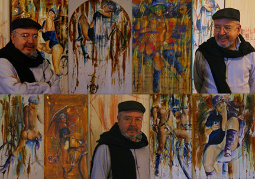
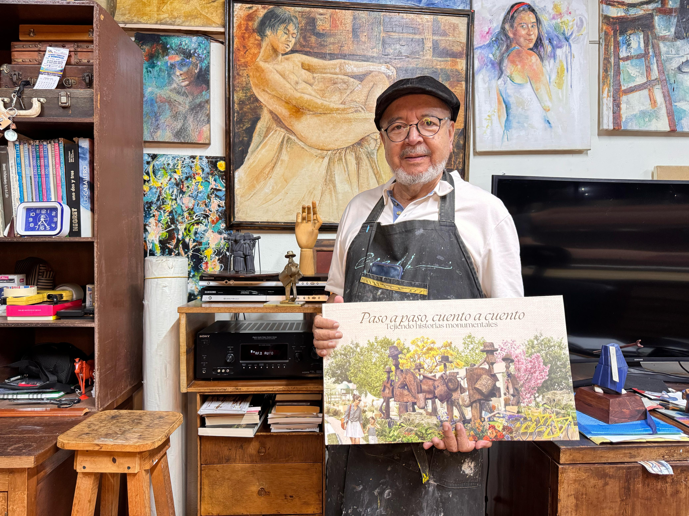
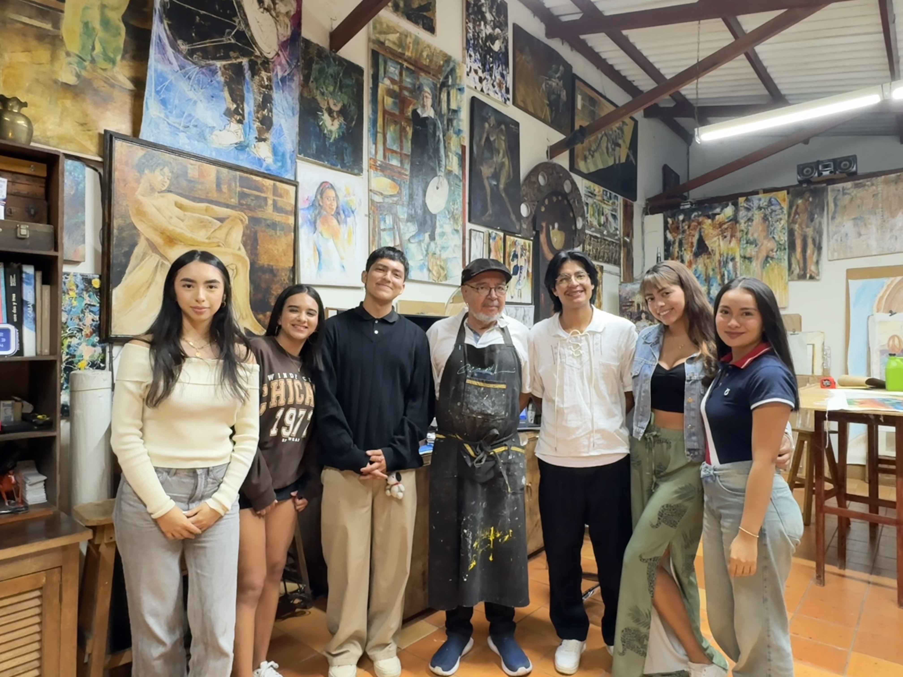

ADOLFO LEÓN TORRES RODRÍGUEZ
Adolfo León Torres Rodríguez nació en Popayán en 1951. Inició sus estudios en Contaduría en la Universidad del Cauca, pero posteriormente abandonó esta carrera para seguir su vocación artística, influenciado por los maestros Iván Valencia y Ever Astudillo. Se graduó en la Facultad de Artes de la misma universidad, donde más adelante se desempeñó como profesor de dibujo y pintura.
Para continuar su formación, viajó a México y realizó una Maestría en Artes Visuales con énfasis en pintura en la Universidad Nacional Autónoma de México, obteniendo mención de honor por su trabajo plástico. A lo largo de su trayectoria, desarrolló series artísticas como Míticos (1988), Sacrificios (2002) y Viacrucis 500 años (1992), en las que explora temas como la memoria, la identidad y el sufrimiento humano. También realizó el monumento escultórico La Chirimía (2000), en homenaje a esta expresión musical popular del Cauca.

LA CHIRIMÍA Y SU HISTORIA
- La chirimía es una expresión musical tradicional del Cauca, integrada por conjuntos donde predominan instrumentos de viento como flautas y percusión con tamboras. Originalmente introducida por los españoles con fines litúrgicos, la chirimía fue adoptada por las comunidades indígenas y campesinas, convirtiéndose en una parte esencial del folclore del suroccidente colombiano.
- En 1975, el maestro Adolfo Torres tuvo su primer encuentro con la chirimía en la Facultad de Humanidades de la Universidad del Cauca. Años después, inspirado por esta tradición musical, concibió la idea de crear un monumento en su honor. Finalmente, en el año 2000, se instalaron las ocho esculturas de bronce en la entrada sur de Popayán (Vía Panamericana, carrera 17 con calle 13). Estas figuras representan a músicos campesinos ataviados con sus ruanas y sombreros, dando la bienvenida a los visitantes de la ciudad.
- Más allá de su valor escultórico, el monumento a La Chirimía es un símbolo de identidad cultural para los payaneses. En torno a él, la vida cotidiana transcurre con trabajadores y artistas que encuentran en este espacio un punto de referencia para la expresión de sus talentos. Además, la chirimía sigue vigente en celebraciones como la Semana Santa y festividades decembrinas, donde es común ver "El Diablo", un personaje tradicional que recorre las calles acompañado por estos conjuntos musicales.
CARACTERÍSTICAS DE LA CHIRIMÍA
- Se compone principalmente de flautas traversas de carrizo, tamboras, maracas y triángulo.
- Es interpretada tanto en contextos religiosos como festivos.
- Su música acompaña al "diablito", un personaje tradicional que recolecta dinero durante las celebraciones.
- En la actualidad, agrupaciones como "Los Alegres de Almaguer" buscan mantener viva la tradición y atraer a nuevas generaciones.

INTEGRANTES
Angélica Rivera Girón, Sofía Calderón, Sofía Bastidas, María Camila Rengifo, Fabio Alessandro Chantré, Andrés Sánchez